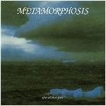

| Artist: | Metamorphosis |
| Title: | After All These Years |
| Label: | Suisa |
| Length(s): | 66 minutes |
| Year(s) of release: | 2003 |
| Month of review: | [08/2003] |
| 1) | After All These Years | 9.43 |
| 2) | New Lords | 8.02 |
| 3) | Sanctuary | 2.14 |
| 4) | Didn't We Know | 8.12 |
| 5) | Eyes On The Clock | 7.11 |
| 6) | No One's Home | 4.32 |
| 7) | Another Day | 9.51 |
| 8) | Not Far From Heaven | 5.41 |
| 9) | Moonbeams On The Wall | 9.54 |
Like its predecessor New Lords starts gently, until the guitars are brought out in the middle section, later augmented by keys. A bit of a poor man's instrumental section, really. Despite the use of multiple instruments, the sound is rather sparse and a bit harsh. The vocals remain dominant.
Sanctuary is a guitar intermezzo, with supporting synths. Something of the type you'd expect on a Camel album, such as Stationary Traveller, although Esposito's guitar sound at times reminds me of David Gilmour's on eighties Pink Floyd tracks.
Didn't We Know starts off highly standard and flat sounding, an effect caused yet again most clearly by the flat and artificial sounding drums (makes me wonder whether Schenk shouldn't be credited for drum programming, instead of drums). The middle section building on a military drum roll sounds nice, but floats off into a key solo that's hardly satisfying.
Eyes On The Clock has a decent guitar solo, but seems a bit uncollected as a composition.
No One's Home has a somewhat stronger guitar line to support, making the track lean a little less on vocal melody than others.
Another Day returns to the sketchy accompaniment, although the gentle melancholy and the lack of drumming makes the first couple of minutes sound pretty good. As the song breaks through, the guitar may enhance a tad, but the drums and stronger voice take away any intimacy. In the second half a happy piano vocal, including perky solo, quirked up a bit by another nice bit of guitar changes the tone, but save the guitar section a change that's not for the better.
Not Far From Heaven is most noticeable for the instrumental key section towards the end, which is pretty decent.
Moonbeams On The Wall fittingly closes the album: some nice keys and a nice guitar section, flat drumming, and overly dominant and unenticing vocal lines. A good summary.